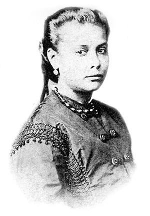

Uma música animada começa a tocar. No verso do disco está escrito:
“Nascida em 1847, Chiquinha Gonzaga, originalmente Francisca Edwiges Neves Gonzaga, foi filha de um militar de alta patente e uma escravizada alforriada. Conforme modelo da época, Chiquinha foi educada para ter o domínio da etiqueta dos salões e aos 16 anos, obrigada pelo pai, se casou com Jacinto Ribeiro do Amaral.
Mas Chiquinha não era uma mulher que se conformava com as normas da sociedade e, após 6 anos de casada e com o ultimato do marido que ela deveria escolher entre ele e a música, a qual ela era arduamente apaixonada, ela decidiu pela música e abandonou o casamento.
O escândalo envolvendo a sua separação foi somente o primeiro de muitos da sua vida, Chiquinha Gonzaga fez do piano a sua profissão, tocando em círculos boêmios, compondo músicas, algo impensado para as mulheres daquele período. Além disso, Chiquinha se envolveu ativamente em questões políticas como a luta abolicionista.
Chiquinha Gonzaga foi uma mulher pioneira na música brasileira. Durante sua vida compôs em torno de 300 musicas, em destaque, a famosa “Ô abre alas”, composta em 1899. No entanto, a sua importância não se resume à música. Chiquinha Gonzaga foi vanguarda também nas questões relacionadas ao seu gênero. Desse modo, ela é uma personagem importante da história da música brasileira, mas também da história do Brasil.”
